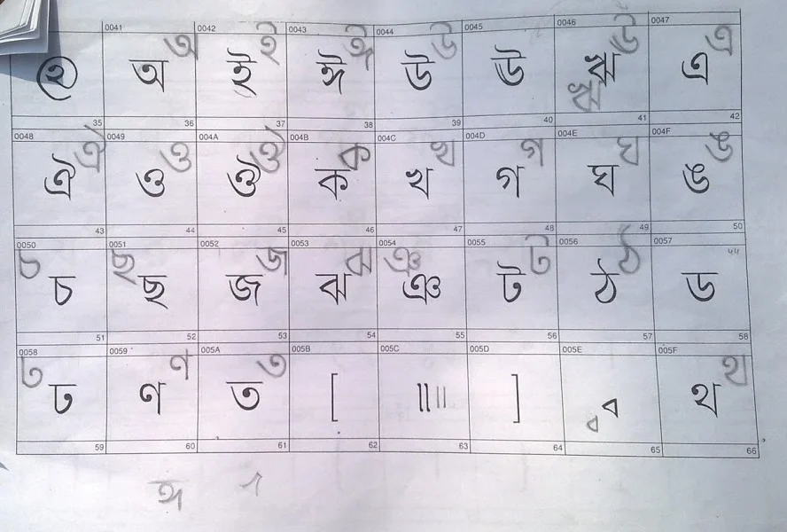
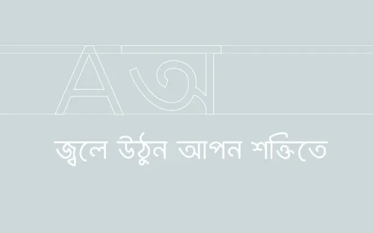
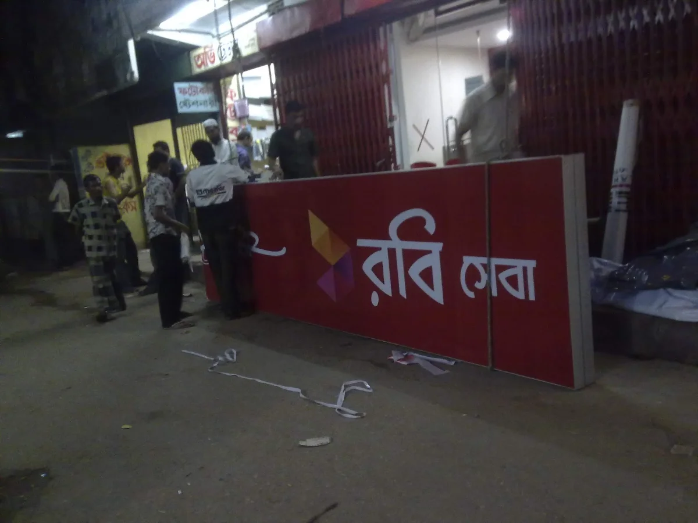
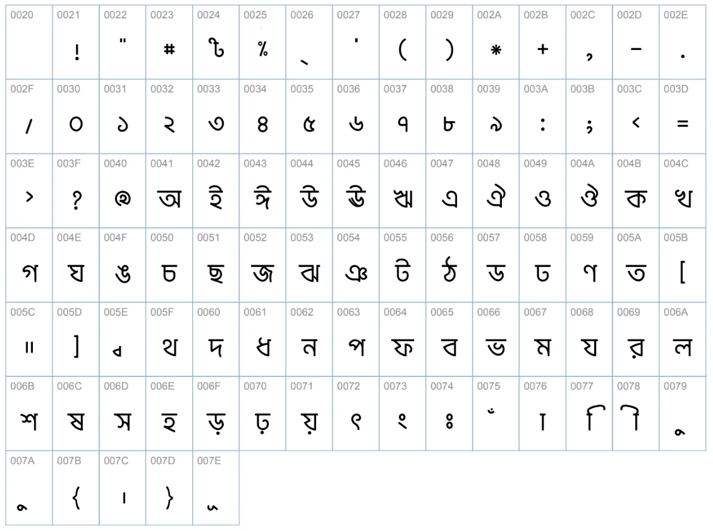
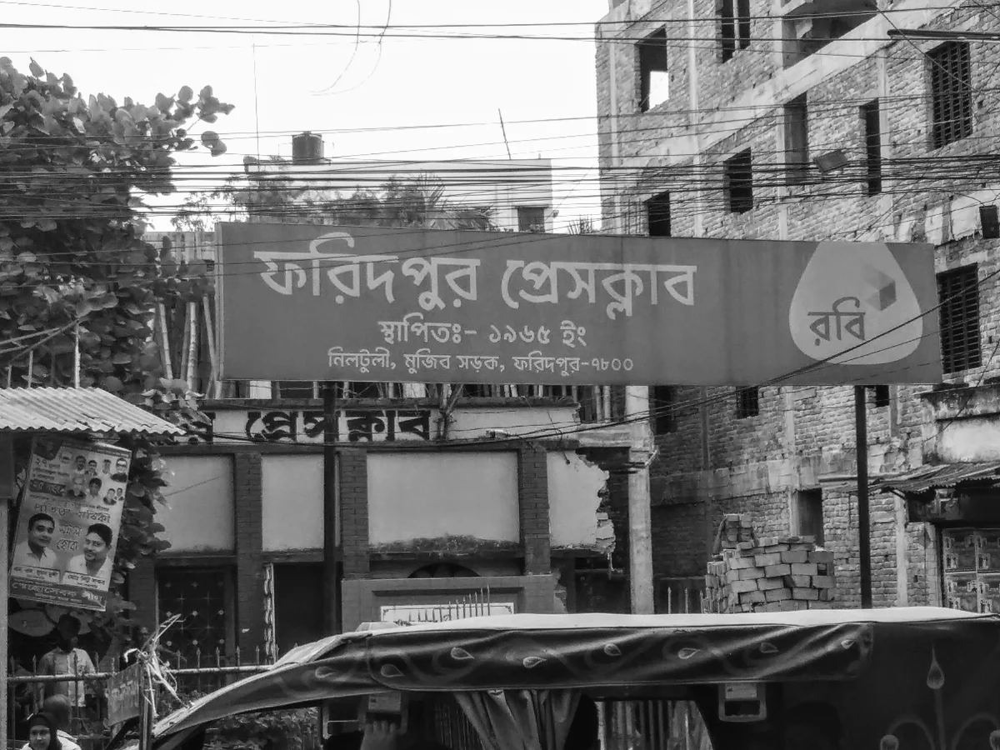
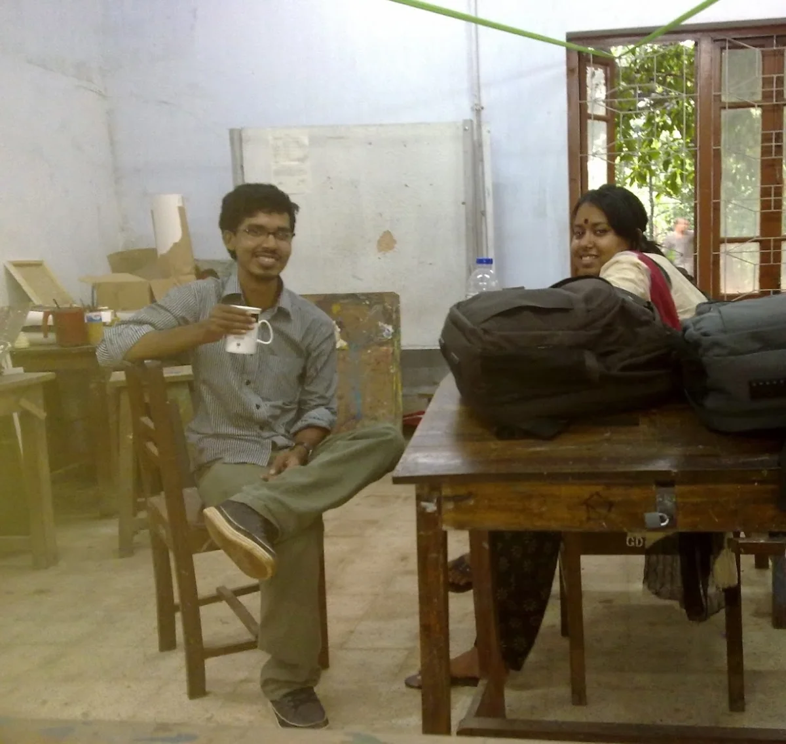

Tirana and I were classmates from 2001, our names sat next to each other on the attendance sheet the entire time. Like most people in graphic design, we both had to make peace with typography, and for those of us a little more drawn to it, that peace turned into something closer to obsession. That's likely where our early collaborations came from, working on type together long before either of us knew where it would lead.
In 2010, a friend asked if I could take on designing a Bangla font for Robi, one of Bangladesh's largest telecom brands, mid-rebrand from Aktel. I said yes before I fully understood what I was agreeing to.

Tirana's first draft of the font.
Tirana made the first draft. It's remarkable, looking back, how closely that early sketch resembled what actually shipped. A working test version was ready within weeks. Everything about the project was confidential, so once we sent it off, there was nothing to do but wait. We couldn't even ask whether Robi would use it.

One of the first titles we set in the new font.
The rebrand was set to go public later that year, one of the most expensive rebranding campaigns in Bangladesh's history at the time. I expected to first see the new identity in the morning papers or on TV. Instead, the night before, walking home through Jigatola, I saw it already on a sign: the word for "service," set in the font we'd built. Every curve, every stroke weight, every vowel mark sat exactly how we'd drawn it, that was ours, and there it was, already living in the world before anyone had officially announced it.

The word for "service," spotted on a sign in Jigatola the night before the rebrand was officially announced.
From first sketch to usable delivery, the core work took about 30 days. Half of those nights I didn't sleep. The three months after that went into solving the practical problems that only show up once a typeface actually has to function: how small can it go before it breaks, what happens when it's blown up on a banner. We had zero prior experience pricing this kind of work, and negotiating payment with Robi became its own real education. When the cheque finally arrived, I photographed it more times than I'd like to admit and kept it for days before depositing it, it felt closer to an autograph than a payment.

The font's full character table.
The font isn't perfect, and I don't pretend otherwise. Some of the mistakes are serious enough that I still feel a flicker of discomfort seeing them in the wild, especially blown up large, where every flaw becomes impossible to miss. Smaller text hides them more kindly.

The font in the wild — on banners, shop signboards, and leaflets across the country.
But there's something genuinely moving about working with a brand of that scale. This font ended up everywhere, on massive banners, on tiny shop signboards, on leaflets on local store counters, quietly present across the entire country in ways a personal project never could be. I've always believed it needed two or three more real revisions to be what it should have been, and I doubt anyone on Robi's team today even knows who originally designed it. Both things can be true. It's flawed, and it's still one of the things I'm proudest of.
After the font shipped, Tirana and I kept working on Bangla typography together, three more projects by 2014. Somewhere in that period we'd half-joked that if we ever shared a home, we'd probably do nothing but design letters all day. Life didn't quite work out that way, career and family reshaped how much room there was for it, but the dream itself never really left.

Tirana and me, around the time we worked on this.
There was a version of that dream that included a full typography exhibition, at least 20 original fonts, a real shift in how Bangla type gets made. I can't claim we personally delivered all of that. But looking at the past decade, Bangla typography as a field has genuinely transformed, more local and international fonts, wider use, real craftsmanship from a growing community of people who care about this the way we did.
This was never a project with a lesson to teach or a point to prove. It's just a story I've told many times, to friends, to colleagues, and I've never seen the harm in telling a good story more than once. If anything, revisiting it now leaves me with one honest, unfinished thought: we can still do more with this. I don't fully know yet what that looks like. But I intend to find out.